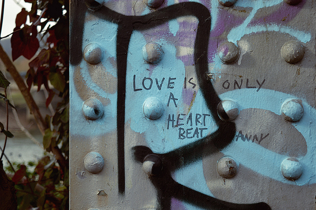

- 
Type in the Wild
A collection of found typography
I like to snap samples of found typography wherever I go. It helps me get a sense of a place and experience each location’s unique character.
I like to snap samples of found typography wherever I go. It helps me get a sense of a place and experience each location’s unique character.